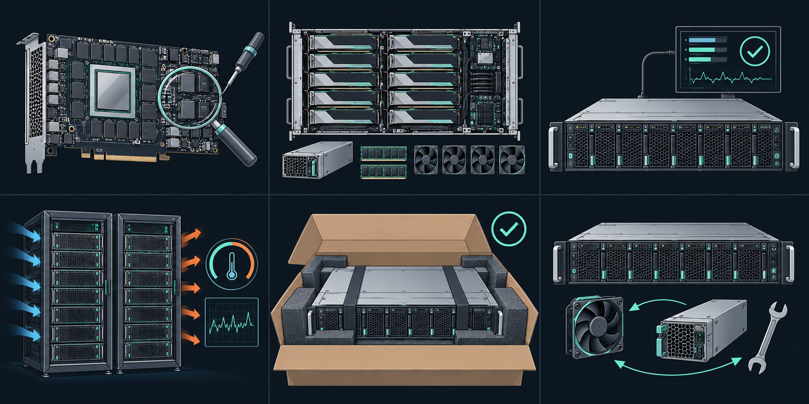
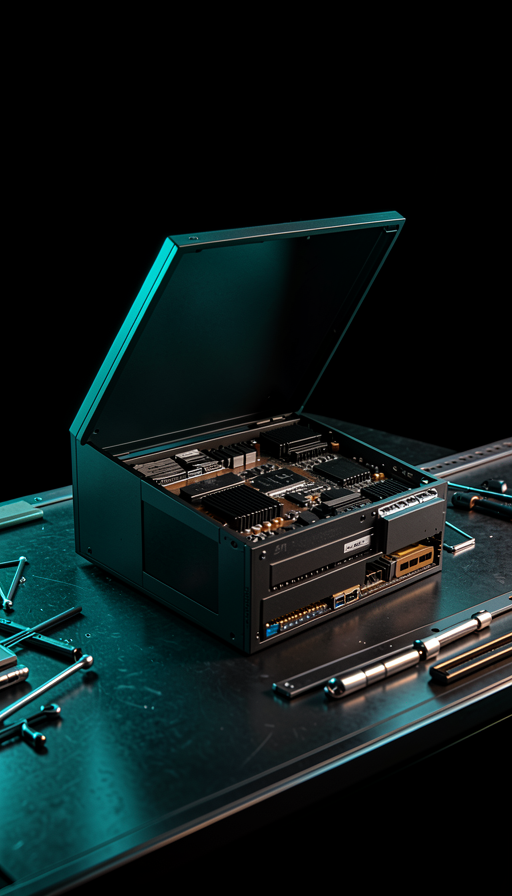

01 / REPAIR↗
故障诊断与维修
整机、GPU 板卡、主板、互联、电源与散热故障评估。先确定问题，再确认修复方案与备件范围。

从硬件修复到整机验证，从设备改造到持续维护。
为高性能算力基础设施，构建完整的技术服务路径。
围绕设备的真实状态组织服务。
明确检测、维修、复测与交付的每一步。
整机、GPU 板卡、主板、互联、电源与散热故障评估。先确定问题，再确认修复方案与备件范围。

配置升级、硬件适配、结构与散热评估、组装调试，让现有设备契合新的应用需求。
配置核对、GPU 健康检查、互联与功能验证。以测试日志和复核记录支撑验收。
按设备与项目要求设计负载，关注温度、功耗、错误日志与稳定性；异常需复测闭环。
从组装复核到独立终检，核对序列号与配置，按设备特点确认防静电与运输包装方案。
围绕巡检、故障响应与维护记录制定服务计划。响应时段、备件和驻场范围以合同约定为准。
AI 生成二维示意 · 通用 GPU 算力设备与配件概念，非 B300 精确产品图
围绕 B300、GB 与 H 系列算力服务器，评估整机、板卡和关键部件的服务需求。
具体型号、兼容性、可修性及测试条件需逐项确认。型号名称仅用于描述服务对象，不代表厂商授权或合作关系。
沟通您的设备需求 ↗
拟建立的标准服务路径。
实际工序与交付物按项目确认。
需求沟通 · 设备登记
外观检查 · IQC 检验
故障定位 · 风险评估
检测结论 · 报价确认
维修 / 拆改配 · 组装复核
功能复测 · 负载压测
独立 OQC · 记录归档
包装核对 · 发货交付
序列号与配置 · 故障与维修记录 · 测试日志 · 终检结论 · 交付清单
XAIGIN 玹擎科技，面向算力服务器全生命周期技术服务的新设维修中心。
我们以维修、验证与维护为建设方向，关注算力设备的持续使用价值。服务面向 IDC、智算中心、AI 企业及设备渠道的实际需求。
维修中心处于筹建与能力建设阶段，具体项目承接、场地设备与交付条件需沟通确认。这里展示的是服务方向与流程设计。
按设备型号、故障情况、检测结果、备件需求与服务范围评估；检测费、维修费、测试费和运输等项目在报价中明确，确认后执行。
建议准备型号、配置、序列号、故障现象、已有日志及历史处理记录。涉及数据存储介质时，请先沟通保留、拆除或备份方案，不在网页上提交敏感资料。
根据设备状态、负载策略与验收要求确认时长。快速预检和正式交付验证的目的不同；异常处理与复测时间单独评估。
可沟通定期巡检、故障响应和维护记录等需求。服务可用性、响应时段、现场范围、备件及驻场条件以最终方案和合同为准。
欢迎沟通设备维修、验证测试与维保需求。
联系信息配置后将在此展示；当前暂未开放在线提交。